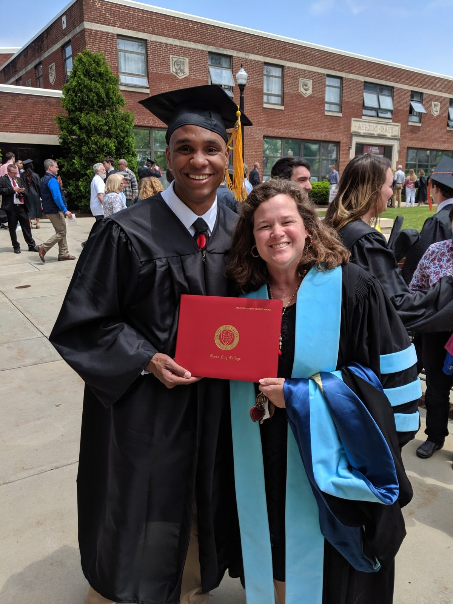
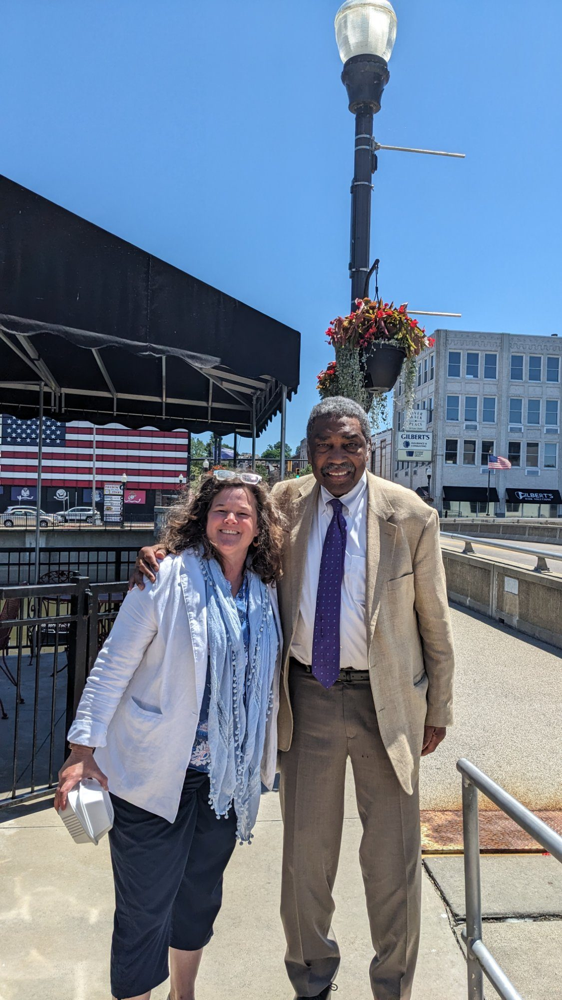
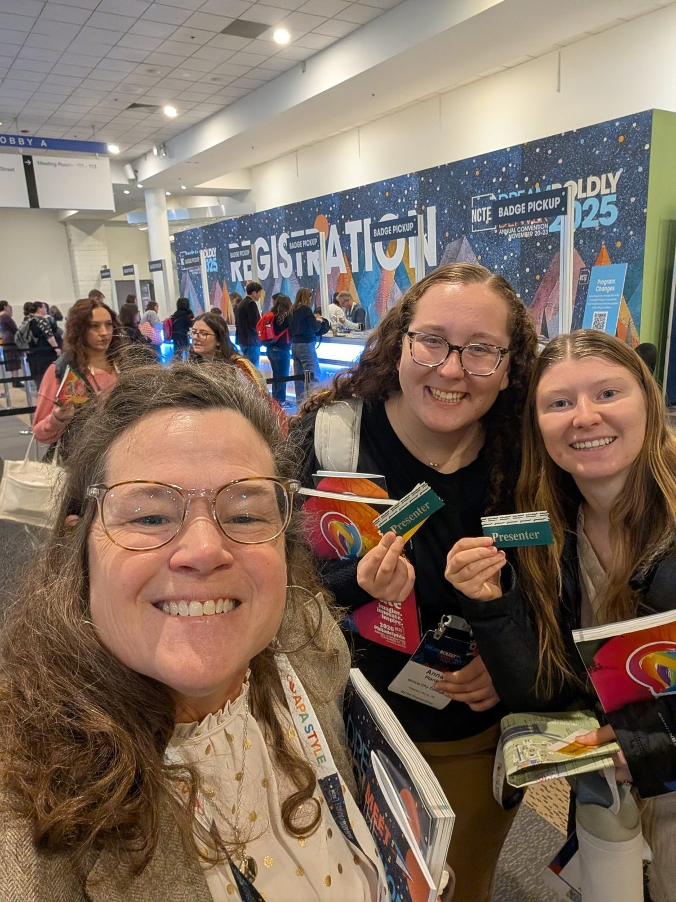
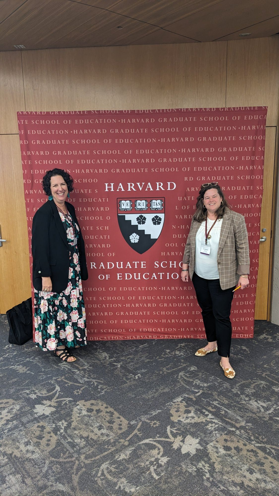

About
I am honored to work in overlapping spheres of schools, community engagement, and higher education.
I care deeply about expanding access and opportunity in ways that open meaningful pathways for students. When students are supported well, they grow into work that extends far beyond themselves. I am inspired by the words of Horace Mann, "Be ashamed to die until you have won some victory for humanity." My students are my victory.

In my current role as a professor, I spend my time working with students and alongside educational partners, and that continues to shape how I think about teaching and learning. I am part of networks that bring schools, communities, and broader systems into conversation. Over time, I have found myself invited to unexpected tables — spaces where education, policy, and community meet — and I am grateful to be a small part of efforts that center people and possibility.

Thank you for taking a moment to explore this space. At its heart, it is simply a reflection of the students, schools, and systems I am grateful to be connected with.


This website is a work in progress, and represents my own learning curve in the spheres of digital literacy. The source code for the website is HTML and lives publicly on GitHub. If you are building your own web presence and want to learn from it, you are welcome to.